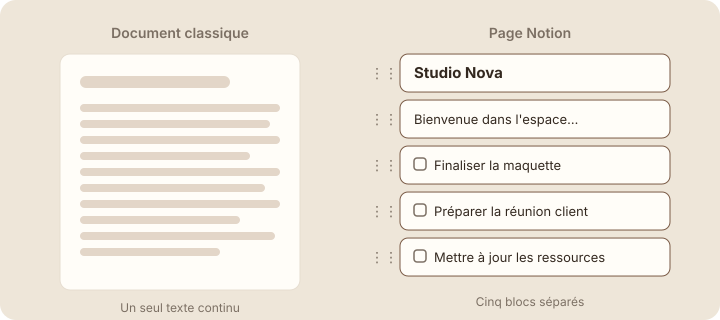

Comprendre les blocs
Étape 1 : comprendre
Dans la leçon précédente, tu as créé ta première page. Une page vide ne sert pas à grand-chose : il faut la remplir. Dans Notion, on la remplit avec des blocs. Comprendre cette idée, c'est comprendre comment fonctionne presque tout le reste de l'outil.
Un bloc, c'est un morceau de contenu.
Un paragraphe, un titre, une case à cocher, une image : chacun est un bloc. Une page Notion, c'est une pile de blocs posés les uns sous les autres.
Pense à des briques
Chaque brique a sa forme, mais toutes s'emboîtent de la même façon. Tu peux en ajouter une, en retirer une ou en déplacer une sans faire tomber le reste. Dans un traitement de texte, ta page est un long texte continu. Dans Notion, chaque ligne est une pièce séparée.

Attention : si un paragraphe ne « descend » pas avec le reste quand tu ajoutes du texte au-dessus, c'est normal. C'est un bloc séparé : tu le déplaces avec sa poignée.
La page d'accueil de Studio Nova
Voici la page qui sert de point de départ à l'équipe de Studio Nova. Survole chaque ligne, ou parcours-les avec la touche Tab, pour voir de quel bloc il s'agit.
Survole une ligne. La page contient 9 blocs. Le titre de la page, tout en haut, n'en fait pas partie.
Repérer les blocs dans ta page
- Ouvre ta page « Accueil — Studio Nova » dans la barre latérale.
- Passe ta souris sur une ligne de texte. Une poignée à six points (⋮⋮) apparaît à gauche : elle marque le début d'un bloc.
Capture d'écran Notion Survol d'une ligne, poignée ⋮⋮ entourée · images/captures/m02-poignee-bloc.png
- Clique sur cette poignée. Un menu s'ouvre avec les actions possibles : c'est la preuve qu'il s'agit d'un bloc indépendant.
Capture d'écran Notion Menu du bloc ouvert après un clic · images/captures/m02-menu-bloc.png
- Appuie sur Échap pour fermer le menu, puis survole les autres lignes : chacune a sa propre poignée.
Astuce : à la fin d'un bloc, appuie sur Entrée. Notion crée un nouveau bloc juste en dessous ; dans une liste, il reprend le même type.
Exercice · dans Notion
Ajoute ton premier bloc
- Ouvre ta page « Accueil — Studio Nova ».
- Clique sur la ligne vide sous le titre et écris : « Bienvenue dans l'espace de travail de Studio Nova. »
- Survole cette phrase et vérifie qu'une poignée ⋮⋮ apparaît à gauche.
Résultat attendu : ta phrase s'affiche sous le titre, et une poignée apparaît quand tu la survoles. Tu viens de créer un bloc texte.
À retenir
Objectif de la leçon : tu sais maintenant reconnaître les blocs d'une page et expliquer pourquoi presque tout ce que tu écris dans Notion est un bloc.
- Une page Notion est composée de blocs posés les uns sous les autres.
- Chaque bloc est indépendant : tu peux le déplacer ou le supprimer sans toucher aux autres.
- La poignée ⋮⋮ qui apparaît au survol signale le début d'un bloc.
Choisis une réponse avant de valider.
Une page Notion est une pile de blocs indépendants : un titre, un paragraphe, une case à cocher… Ce n'est ni un long texte continu comme dans un traitement de texte, ni une grille de cellules comme dans un tableur.
Choisis une réponse avant de valider.
Chaque case à cocher est son propre bloc. C'est pour ça que tu peux la déplacer avec sa poignée sans réécrire ni décaler le reste. L'enregistrement automatique existe bien, mais il n'a rien à voir avec le déplacement.